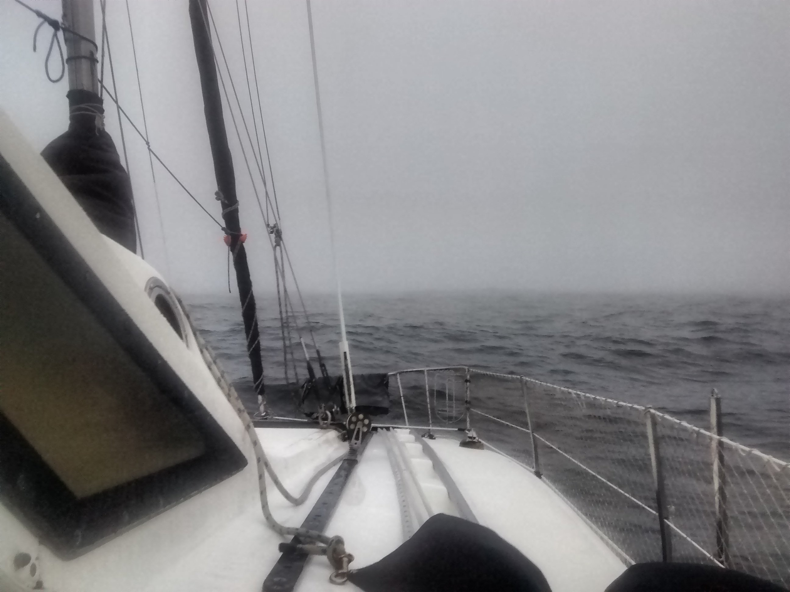
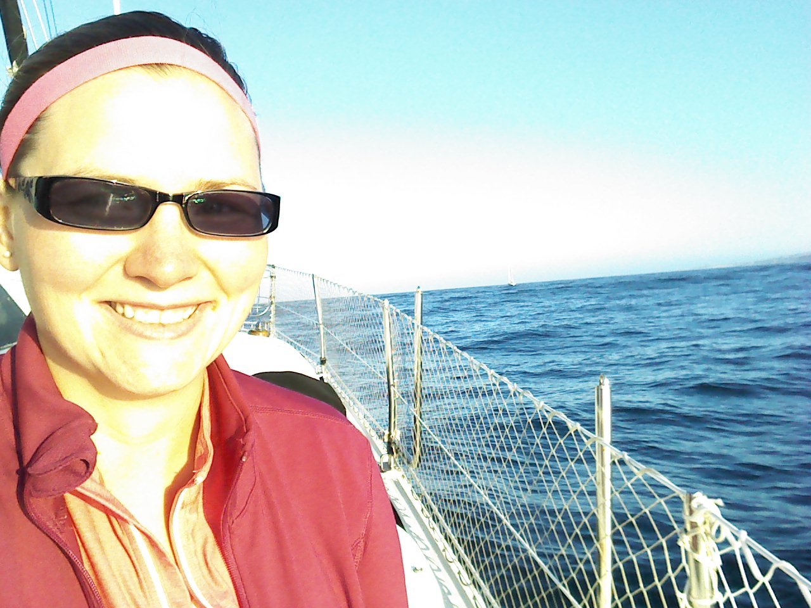
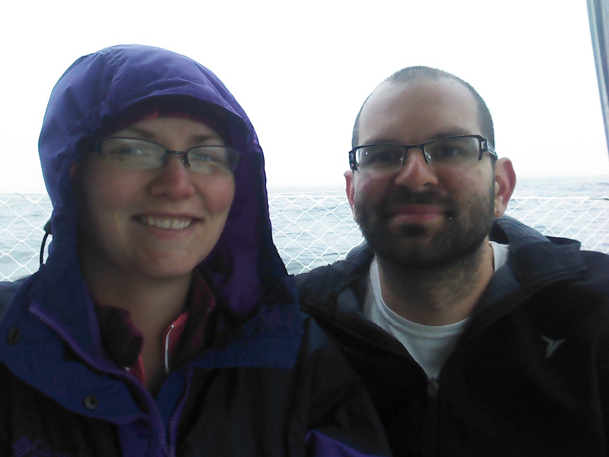

Cruising from Port San Luis to San Francisco in a Gemini 105m
Over the last 5 days my wife and I cruised from Port San Luis to San Francisco. The total distance was 228 Nautical Miles (nm). We recently purchased the boat and decided to relocate it to a Marina closer to where we live. We knew the trip would relatively difficult. The majority of the journey would be against the wind and waves. For this reason we decided to motor the entire distance up North.
Due to technical difficulties, the first ~12 hours of the trip are missing from the GPS track.
In Google Earth and gpx format and directly in [Google Maps](https://drive.google.com/open?id=1glvXJozng8Xwo1her0wQgdYHBgQ&usp=sharing).Day 1 (2017-07-05)
On the first day we took Bart to Caltrain to Amtrack from San Francisco to Avila Beach. From there we took the Water Taxi to the boat which was moored on a mooring ball. I made the call for us to leave that night, with me taking the night-shift.
 |
 |
 |
5pm: Leave Port San Luis
Off this part of the coast during this time the winds were against us at 16kts gusting to 21kts.
 |
The seas overnight were not too rough, but the combination of the pounding and the headwind meant we could only sustain 4kts.
The Gemini pounds the seas pretty badly. This is mostly due to a combination of a solid (not netted) forward deck, a relatively low bridge deck clearance, and the structural nature of a catamaran. Cody got very seasick.
Day 2 (2017-07-06)
2am: A late night conversation
At ~2am I was hailed by a 300ft research vessel heading North towards Portland. He was showing up on my radar and just called to let me know he was passing on the port side and should continue on our respective courses. It was nice to hear from someone in the middle of the night. I had a conversation with him, and his general advice to avoid the rough seas was to generally hug the coast. He mentioned the waves don’t get too bad until Point Sur.
7am: Cody takes over
|  |
9am: A snagged prop
In the morning we had a prop fouling by a line that had been pounded out of it’s holding bag on the forward part of the deck. It had found its way under the hull and was just long enough to get the tip of the line fouled in the prop.
The Gemini has a raisable drive leg made by Sillette:
The drive leg adds complexity to the rig, but does make fixing fouled props easy. The difficulty here was actually figuring out it was fouled in the first place. Every time I would raise the leg to inspect it, there was nothing in it. The line was only long enough to get in the prop while down and at speed (so the suction would draw in the line). I had to watch the water carefully and wait for the line to find its way into the prop to confirm my suspicion about the cause of the extreme vibration.
3-5pm: Point Sur
By the time we hit Point Sur there was a small craft advisory in effct. There were very strong headwinds and 10ft seas.
This was the most difficult part of the trip. Usually the buoyancy of the Gemini allows it to “only” pound waves and ride over swells. This was the only part of the trip where the waves were so bad that the boat would pound and dig deep into the wave, with seawater crashing over the top. Unsurprisingly the autohelm was not able to keep us on course and I took over the wheel. I drove the engine hard and pressed forward for a few hours to get us past this difficult point. I was only able to maintain 2-3kts.
At around 6pm the weather subsided enough to allow me to throttle back the engine and re-enable autopilot, giving me and the engine a break while we continued to travel up the coast, with our intermediate destination of anchoring at Whalers Cove for the night.
Day 3 (2017-07-07)
12am: Give up on Whalers Cove
Whaler’s Cove is a small little cove for boats to anchor in, “protected” by surrounding rocks. It is only a few hundred feet across, with an opening of about 200 feet.
With the slow progress we made thus far, we arrived here at around midnight in the darkness. The cove was indistinguishable from the surrounding rocks and black land. With very little anchoring experience and a dead spotlight, there was just no way were going to able to make this landing, especially given our fatigue.
Luckily Cody volunteered to drive three more hours north to Monterey Bay Harbor.
3am: Arrive at Monterey Harbor
After a small nap, I had enough brainpower to remember that I had the foresight to load OpenCPN with the appropriate vector maps for this area on my cell phone. This was an amazingly powerful tool for guiding into a Marina at night. A detailed map with a real-time GPS overlay gives you the confidence that you are actually in the right direction and looking at the right lights. Luckily the friendly Harbormaster on the night shift gave us an end-tie and a good nights sleep.
9am: Depart Monterey Harbor
Monterey Harbor is a small city harbor. Nothing really notable, the service was nice, bathrooms were clean, fairly priced.
For this day we decided to make an easy trip of only 22nm north to Santa Cruz.
5pm: Arrive at Santa Cruz
Santa Cruz is a nice harbor, but for a transient berth we paid ~$50, which is twice as expensive compared to the other marinas we stayed at. On top of that, shower access required a non-refundable “deposit” and access to shore power was extra, no thanks. Since we had a short day, we treated ourselves to Betty’s Burgers for dinner.
Day 4 (2017-07-08)
6am: Depart Santa Cruz
|  |
I say calm, but it still is the Pacific ocean. Calm in this context means no water is spraying in your face:
5pm: Arrive at Pillar Point
Pillar Point Marina is primary a fishing harbor, but has lots of shops and restaurants nearby. It is a surprisingly happening place.
Day 5 (2017-07-09)
6am: Depart Pillar Point Marina
|  |
Departing Pillar Point was relatively easy in the early morning, especially assisted with Radar. We were accompanied by many fishing boats out to get their catch. A kayaker warned us of a pair of Humpbacks just outside the harbor barrier wall, and indeed I had to make evasive maneuvers to avoid a whale surfacing ~30ft in front of the boat!
9am: Drive leg leak
This morning the drive train of the boat sounded a lot more “whiny” than normal. The worrying sound was coming from the drive leg, and not the diesel engine. Luckily I had been lurking on the Gemini Owners Mailing List to have a hunch that there might have been an oil leak, and that the “billows” was the most likely culprit:
The billows is a rubber part that gets a lot of exercise as the drive leg turns, raises, and lowers. This leak allowed enough oil to drain to expose the top CV joint, leaving it less lubricated and whiny. After a quick phone call to the previous owner to confirm the correct oil was onboard and available (thanks so much Jerry! This was a huge lifesaver!), I topped up the drive oil to get us the rest of the way home. This billows will be first on my list of repairs to make on the boat.
11am: Entering San Francisco Bay
We timed it correctly to allow us to come in with the tide, giving as a nice 3kt speed boost giving us a peak speed of 9.3kts under the bridge.
1pm: Arrive at Oyster Point Marina
And finally we arrived at our actual destination: Oyster Point Marina